ÉTUDIANT EN GESTION ORIENTÉ DATA & IA
Je suis Alexis Lechat, 19 ans, étudiant en gestion.
À travers mes études, mon alternance et mes projets personnels, je développe progressivement une approche orientée data, intelligence artificielle et création d'outils d'aide à la décision.
Ce portfolio retrace mon parcours, mes expériences et les compétences que je mobilise pour évoluer vers des fonctions liées à l'analyse, à l'optimisation et à l'innovation.
Amélioration des processus
Aide à la décision
Excel, IA, Notion
« J'aime comprendre les systèmes, structurer les idées et contribuer à leur amélioration. »
FORMATION
Spécialités : SES et Mathématiques
Gestion des Entreprises et des Administrations
PERSONNEL
Place importante dans mon quotidien. Très forte consommation musicale et rapport personnel fort à cet univers. La musique accompagne ma concentration, mes réflexions et mes moments de création.
EXPLORERIntérêt pour Marc Aurèle, Nietzsche, Camus, Sartre, Carl Jung. Attrait pour les idées, la réflexion, la compréhension de soi et la construction d'une vision personnelle du monde.
EXPLORERGoût pour les films qui font rêver autant qu'ils font réfléchir. Intérêt pour l'action, la science-fiction et la fantasy. Le cinéma comme source d'inspiration et d'ouverture sur le monde.
EXPLORERTERRAIN
Extrait du fichier Excel — Outil d'évaluation anti-blanchiment
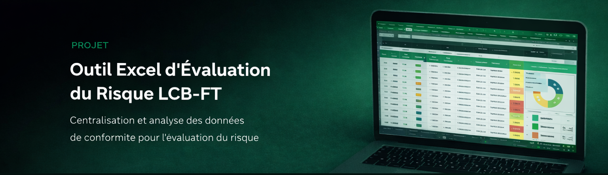
Dashboard de suivi des déchets — Aperçu du système
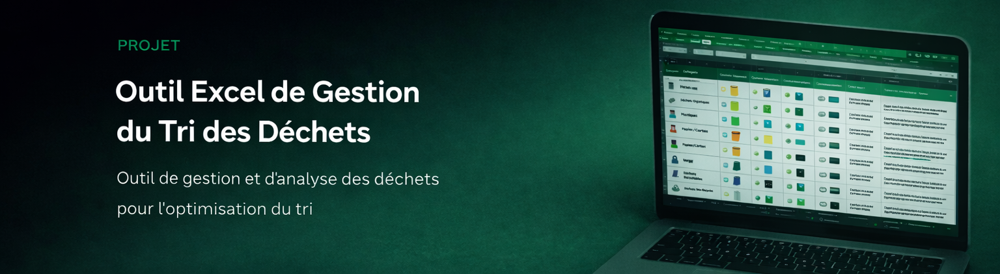
ANALYSE
Dans le cadre du projet de suivi des déchets chez VHM Group, certaines factures fournisseur ne contenaient pas les quantités nécessaires au bon fonctionnement de l'outil.
Les quantités sont essentielles pour suivre les déchets. Sans cette donnée, l'outil perd une partie de sa valeur et le suivi devient incomplet.
Absence d'information clé sur certaines factures. Impossibilité d'obtenir un suivi complet et fiable des déchets.
Intégration progressive des quantités sur les factures. Amélioration du processus amont avec le fournisseur.
Outil rendu plus fiable, meilleure qualité de donnée, meilleure exploitation possible du dashboard.
Cette situation m'a appris l'importance de la qualité de la donnée, la nécessité d'agir sur le processus et pas seulement sur l'outil, et la valeur d'une réflexion orientée amélioration continue.
SAVOIR-FAIRE & SAVOIR-ÊTRE
VISION
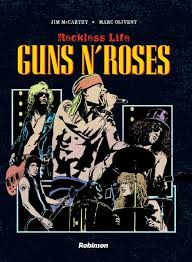
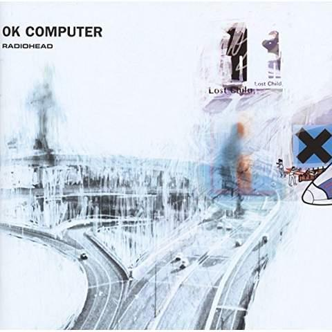
La musique a une vraie place dans mon quotidien. J'écoute des styles et des univers assez différents, que ce soit Radiohead, Guns N' Roses ou Bushi. J'aime autant l'énergie brute de certains artistes que des ambiances plus modernes ou plus sensibles. La musique m'accompagne souvent quand je réfléchis, quand je travaille ou simplement quand j'ai besoin de me mettre dans une bulle.
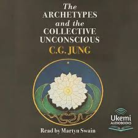
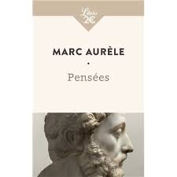
La philosophie m'intéresse surtout pour ce qu'elle apporte en réflexion sur soi et sur le monde. J'aime lire ou découvrir des auteurs comme Marc Aurèle, Jung ou Kafka, parce qu'ils ont chacun une manière différente de questionner la vie, les comportements ou les idées. C'est un univers qui m'aide à prendre du recul et à nourrir ma réflexion personnelle.
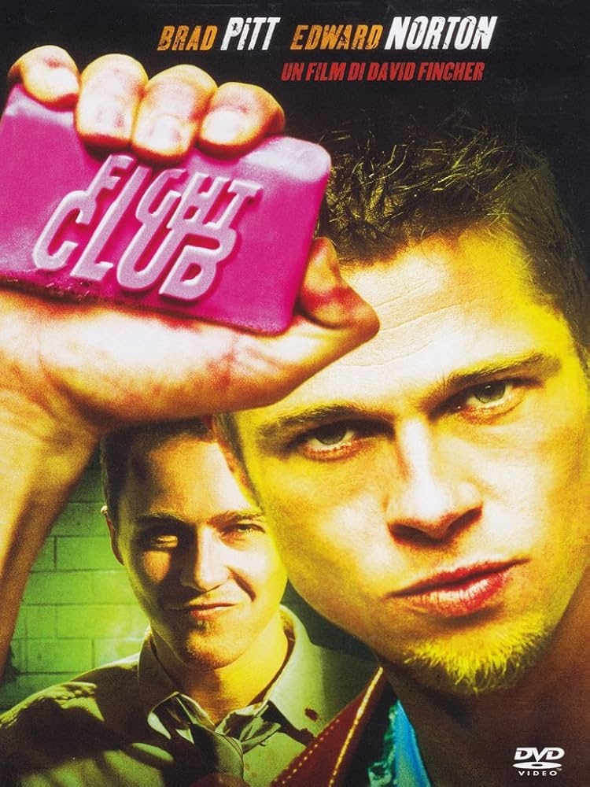
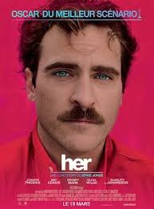
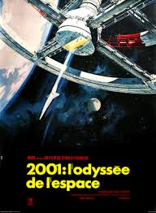
Le cinéma fait partie des choses qui m'inspirent le plus. J'aime les films qui ont une vraie identité visuelle mais aussi quelque chose à raconter en profondeur, comme Fight Club, Her ou 2001 : L'Odyssée de l'espace. Ce que j'aime, c'est quand un film arrive à faire rêver, réfléchir ou laisser une impression durable après le visionnage.
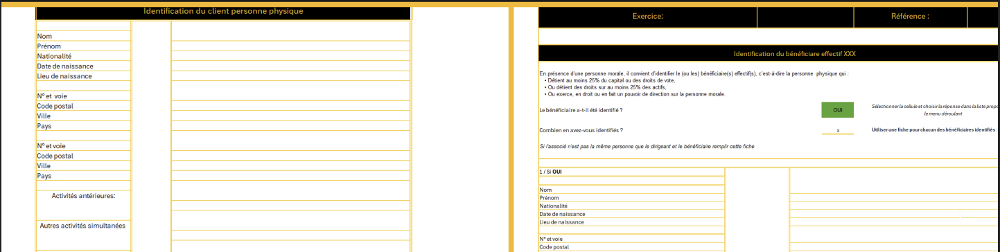
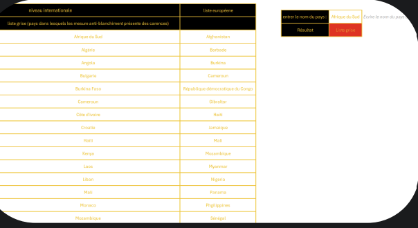
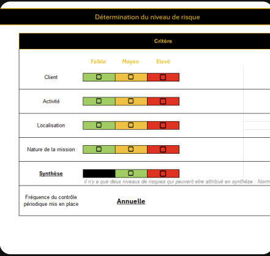
Ce fichier Excel constitue un outil de conformité développé dans le cadre de la lutte contre le blanchiment de capitaux et le financement du terrorisme (LCB-FT). Il permet de structurer et de sécuriser l'analyse des dossiers clients en automatisant les principales étapes du processus de contrôle.
Grâce à cette automatisation, l'outil permet de standardiser les analyses, de limiter les erreurs humaines et de fiabiliser les contrôles réalisés. Il garantit ainsi le respect des obligations réglementaires tout en améliorant l'efficacité opérationnelle du cabinet.
Ce fichier Excel constitue un outil de pilotage de la gestion des déchets, développé à partir des données comptables issues du logiciel Incogest. Il permet de transformer des écritures comptables brutes en une base de données structurée et exploitable, afin d'améliorer le suivi des coûts et de soutenir la démarche RSE de l'entreprise.
L'ensemble de ces traitements permet d'obtenir une vision claire et synthétique de l'activité, tout en automatisant les tâches de traitement et en fiabilisant les données. L'outil facilite ainsi la comparaison des prestataires, l'identification d'écarts de performance et la mise en évidence d'axes d'optimisation.
Il constitue un véritable support d'aide à la décision, permettant à l'entreprise de mieux piloter ses coûts et de structurer son suivi environnemental.